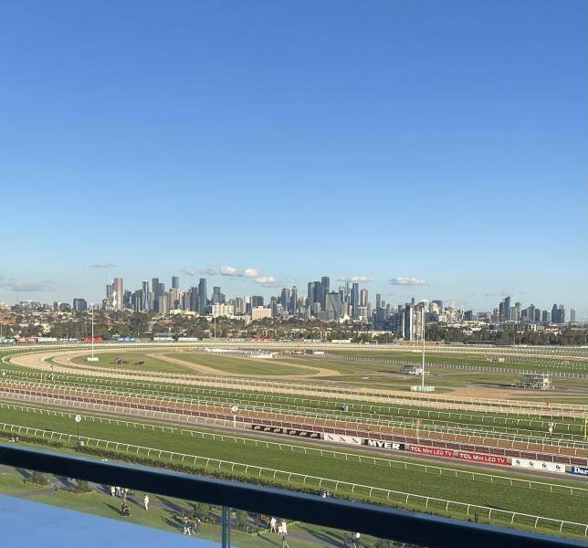

CORE lands in Melbourne: inside Tomorrowland’s first Australian outing
Next Saturday, Tomorrowland’s house and techno offshoot makes its Australian debut at Flemington. The sold-out show is a test of whether a Belgian festival world can travel this far from home, and the lineup suggests it has done its homework.

For years Australian fans have asked when Tomorrowland would come. The answer, it turns out, is that it will not, or at least not in the form they imagined. Speaking to Rolling Stone Australia in 2025, the organisers were blunt: “there will be no Tomorrowland festival in Australia.”[1] What is coming instead is CORE, and on Saturday 28 November it takes over The Nursery at Flemington Racecourse for nine hours, from 2pm to 11pm.[2][5]
The show is sold out, with a waiting list on CORE’s website.[3][5] For a first visit to a new continent, that is a confident start, and it gives the Belgian brand a useful data point about how far its name now travels.
What CORE is
CORE is a standalone brand inside the Tomorrowland world, focused on house and techno and staged in immersive, jungle-themed settings. It began as a stage at Tomorrowland in 2017 and has since travelled to Brazil, Tulum and Medellín.[1] In 2026 it has become a touring proposition: Medellín in February, Los Angeles in May, and now Melbourne, the concept’s fifth continent and, as Bandwagon put it, its furthest destination from home yet.[1][3]
The appeal of the format is obvious from a promoter’s chair. A one-day event inside an existing venue avoids the cost and risk of building a full camping festival, while the production language, all timber, greenery and light, carries the brand’s identity wherever it lands.[1][3] Melbourne is being run by Collective Minds and Framed Agency, with tickets sold through Humanitix, the non-profit platform that gives its booking-fee profits to charitable projects.[3]

Three stages, three moods
If the Tomorrowland name suggests main-stage spectacle, the bill does not. The main stage opens with Dino Lenny and builds through Bibi Seck to three 90-minute sets from TSHA, Moodymann and Honey Dijon, before Mall Grab and Effy close the night back to back.[4][5] Moodymann is the booking that best explains what CORE wants to be here: a Detroit original whose sets are as much about soul, disco and attitude as about house. (We wrote about his long relationship with Melbourne last month.)
The Mano stage, making only its second appearance after debuting at CORE Los Angeles, is hosted by Atmosphere and leans darker.[3][5] Noise Mafia and Peterblue open back to back, Daria Kolosova follows, and Kobosil closes.[5] The stage’s lineup also lists HiTMiLØW, Lola Voss back to back with Billy Currie, and fumi, the Berlin-based DJ whose fast, multi-deck sets have made her one of the year’s quickest risers (our profile is here).[2]
The third stage, ORLO, is where Melbourne’s own scene gets the floor. Hannah D opens with a two-hour set, Adriana plays back to back with Edd Fisher, then JNETT, before Jennifer Loveless closes.[5] Bandwagon singled out Loveless and JNETT as the Melbourne selectors on a bill otherwise heavy with visitors.[3]
A busy fortnight for the same faces
Several of CORE’s artists are spending the week before in the country. Honey Dijon is on this weekend’s Strawberry Fields bill on the Murray River, as are Jennifer Loveless and Adriana, while fumi is listed on the festival’s Wildlands stage.[6][7][8] For local audiences it makes the last fortnight of November a rare concentration of underground headliners, and for the artists, a chance to read Australian crowds before the bigger room at Flemington.
There is also a local giving component. CULTR reports that Framed Agency is directing AUD 30,000 to the Artists for Kids Culture artsbus as part of the event.[5]
What to watch
For CORE, the questions are about translation. Can a design language born in a Belgian forest feel at home on a Melbourne racecourse in early summer? Will a crowd raised on boutique festivals and club nights take to a global brand? The ticket sales suggest the appetite is there. The lineup suggests the organisers understood that in Australia, credibility is earned with selectors, not spectacle.
If you have a ticket, plan for Melbourne’s changeable early-summer weather, arrive early for Hannah D’s opening set on ORLO, and save some energy for the end of the night, when Kobosil on Mano and Mall Grab and Effy on the main stage pull in opposite directions. If you do not, the waiting list is open, and on this evidence it would be no surprise to see CORE return.
[ Sources and notes ]
- [ 1 ]Tomorrowland confirms when it's landing in Melbourne in 2026, RUSSH, 12 August 2025.
- [ 2 ]CORE Melbourne drops star-studded lineup for Australian debut, Beat, 4 June 2026.
- [ 3 ]Tomorrowland's CORE Melbourne sells out Australian debut with Honey Dijon, Mall Grab, Moodymann & more, Bandwagon, 20 August 2026.
- [ 4 ]Tomorrowland CORE Melbourne set times announced, DJ Mag, 16 October 2026.
- [ 5 ]Tomorrowland CORE Melbourne unveils full stage timetables for sold out Australian debut, CULTR, 11 November 2026.
- [ 6 ]Strawberry Fields has officially kicked off, Happy Mag, 20 November 2026.
- [ 7 ]Strawberry Fields adds 8th stage & drops its 2026 lineup, Mixmag Australia, 7 July 2026.
- [ 8 ]Strawberry Fields Festival 2026, PBS FM, 9 June 2026.
Researched and drafted with AI tools; fact-checked and edited by Creators Lab editors. How we use AI · Report an error